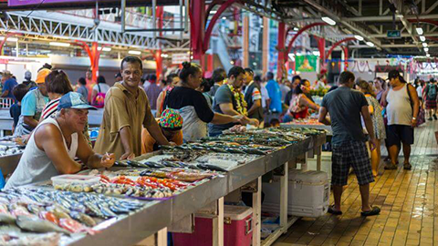

SPCPF
Syndicat pour la Promotion des Communes de Polynésie Française
Cette vidéo présente le fonctionnement et l'organisation du Syndicat pour la Promotion des Communes de Polynésie Française.
-
Cette vidéo présente le fonctionnement et l'organisation du Syndicat pour la Promotion des Communes de Polynésie Française.
- 
Agence : Prox-i
Client : SPCPF
Média de diffusion : Youtube
Durée : 02:00
SPCPF
Restauration Scolaire
Le Syndicat pour la Promotion des Communes de Polynésie Française est en charge de la restauration scolaire publique du premier degrés.
-
The SPCPF is in charge of public primary school catering.
Agence : Prox-i
Client : SPCPF
Média de diffusion : Youtube
Durée : 02:00
 Back to Top
Back to Top